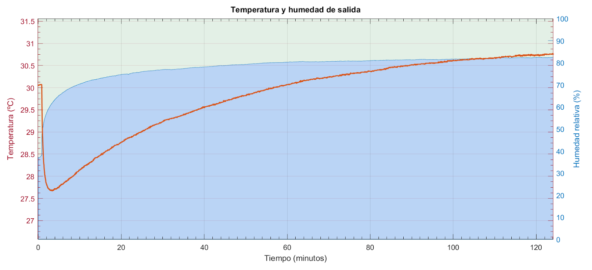

¿Pero enfría? ¿Vale la pena? ¿Sustituye a un aire acondicionado? Bueno, respuestas cortas: Sí... depende y... no. Las respuestas largas la tenéis en este artículo.
Primero vamos a introducir unos conceptos básicos de psicrometría para usarlos después. Después veremos las partes de un evaporativo y el principio de funcionamiento. Conectaremos un sensor HTU21D para medir la temperatura y humedad a la salida del aparato. Y, de postre, haremos algunas pruebas de rendimiento en distintas condiciones.
| Panel de celulosa corrugada. |
{kind=link}
Psicrometría
Si hay algo que me gusta de la termodinámica es que a partir de unos conceptos tremendamente sencillos, y con muy pocos datos de entrada fácilmente observables con instrumentos comunes y corrientes, se puede obtener bastante información interesante sobre el sistema.
Sóplate en el dedo. Ahora mójate el dedo y sopla de nuevo. ¿Se nota más frío? Claro, al salir de la ducha mojados o de la piscina hace frío. Da igual que el aire esté caliente. Cuando el agua se evapora baja la temperatura, eso es un principio físico que conocemos casi desde niños.
¿Pero el agua no se evaporaba a 100ºC? No, el agua se evapora a cualquier temperatura. De lo contrario no se secarían las cosas. Lo de los 100ºC es la temperatura de cambio de fase, por encima de la cual ya no puede existir agua pura en estado líquido a una atmósfera de presión. Pero evaporarse se evapora siempre.
Imaginad la evaporación como una disolución de agua en el aire. Servirá, aunque el símil no es exacto porque implica un cambio de fase previo a vapor de agua -al contrario que la sal, que cuando se disuelve en agua no pasa a estado líquido-. El cambio de fase de líquido a gaseoso absorbe siempre una determinada cantidad de energía correspondiente al calor latente de vaporización.
Cuando salimos de la ducha el aire está cargado de vapor. Y se nota frío pero no se nota mucho. Como ya sabíamos, al agua le cuesta más disolverse en aire húmedo. Como pasa en una disolución, la cantidad de agua que puede disolverse tiene un límite hasta que esta se satura.
Para saber cuánto es el límite ponemos aire y agua pura en un recipiente cerrado durante un rato. Tomamos nota de la temperatura, presión atmosférica y otros datos de interés. Como el aire y el agua están en contacto y el recipiente hermético, con el tiempo se alcanzará el equilibrio.
Ahora digamos que el aire seco no tiene nada de vapor de agua y el aire saturado tiene todo el agua que podría tener. Así definimos el concepto de humedad relativa. Siendo 0% para el aire totalmente seco y 100% para el aire saturado.
He resaltado lo de agua pura porque si tiene alguna sal disuelta esta va ejercer atracción por las moléculas del agua dificultando la evaporación. Por ejemplo el equilibrio de vapor en una disolución saturada de sal común sólo llega al 75% del que se alcanzaría con agua pura. Si en vez de cloruro de sodio usamos cloruro de litio, llegaríamos tan solo al 11% de saturación. En 1976 se publicó un paper con medidas para diferentes sales y temperaturas: Humidity Fixed Points of Binary Saturated Aqueous Solutions. Hoy en día esta propiedad se utiliza para calibrar medidores de humedad.
Si el agua se enfría al evaporarse, cabe preguntarse ¿hasta qué temperatura?. Para averiguarlo tomamos un termómetro y lo recubrimos con una gasa o algodón. Lo humedecemos y lo agitamos en el aire a ver hasta qué temperatura baja. La lectura que obtenemos se llama temperatura de bulbo húmedo o temperatura húmeda. A la temperatura del aire, la que marcaría un termómetro normal y corriente la llamamos temperatura de bulbo seco, temperatura seca o simplemente temperatura del aire.
Pero resulta que la temperatura de bulbo húmedo depende de cuán seco esté el ambiente. Podríamos utilizar dos termómetros, uno normal y el otro humedecido para medir la humedad relativa. Tal aparato se llama psicrómetro. Luego ambos termómetros se agitan en el aire y se miran las temperaturas de uno y otro.
| Psicrómetro de carraca. Fuente: Ebay. |
{kind=link}
Si el aire está saturado de humedad al 100%, dará igual que mojemos el termómetro porque del agua no se va a evaporar nada. En tal caso la temperatura húmeda será la misma que la seca. Los psicrómetros vienen con una tabla de doble entrada que nos da la humedad relativa en función de ambas temperaturas o en función de la temperatura seca y de la diferencia entre ambas.
| Tabla de diferencias psicrométricas. termometros.com |
{kind=link}
Suponed, por ejemplo, la temperatura del termómetro seco es 20ºC y el húmedo marca 16ºC. Hay una diferencia de 4ºC. Según la tabla anterior la humedad relativa sería del 63%.
Realmente con un termómetro húmedo lo que estamos midiendo es una aproximación. Porque la temperatura húmeda es, en teoría, la temperatura a la que quedaría una región de aire si lo saturamos al 100%. Cosa que no hacemos con el termómetro húmedo. Para saturar el aire necesitaríamos algo como esto:
| Saturador adiabático. |
{kind=link}
El montaje anterior se llama saturador adiabático y si lo pensáis, es muy parecido a la brisa del mar o al aire cerca de una piscina. Un enfriador evaporativo, luego lo veremos, es parecido. Entonces la termodinámica nos lleva a preguntarnos: dadas unas condiciones iniciales de temperatura y humedad ¿A qué temperatura saldría el aire, si lo saturamos del todo?
Para responder a eso están las cartas psicrométricas, que son una representación gráfica más elaborada que la tabla de antes, donde están representadas las variables más importantes. Aquí tenéis una simplificada para las variables que nos interesan. Podéis abrir la imagen en otra pestaña para ampliarla:
| Tabla psicrométrica simplificada. Click para ampliar. |
{kind=link}
La línea recta de abajo representa la temperatura ambiente, la del termómetro seco. La curva superior representa la temperatura del bulbo húmedo, muy próxima a la temperatura de saturación. Las curvas entre medias representan distintas humedades relativas. De hecho la recta de temperatura seca sería la correspondiente al 0% de humedad y la de temperatura de saturación correspondería a la curva del 100%. Las líneas verticales nos sirven de referencia para la temperatura seca, y las líneas oblicuas para la húmeda.
Ahora que sabemos cómo leerla, vamos a situar un punto. Por ejemplo 30ºC y 20% de humedad.
Y para ver hasta donde bajaría la temperatura del aire al saturarlo de humedad, trazamos una paralela a la línea oblicua más cercana hasta ver donde corta a la curva de 100%. El dato es 15.7ºC aproximadamente. O sea que sin invertir energía, sin mover el calor de sitio, prácticamente sin hacer nada bajamos la temperatura de 30 a 15ºC, ¡La mitad! Bueno, ya habrá tiempo de matizarlo más adelante.
Con el mismo aire inicial, 30ºC y 20% RH ¿Qué temperatura obtendríamos a la salida si en lugar de llevar la saturación al 100% la dejáramos en el 60%?
| Proceso de saturación adiabática desde el 20% al 60%. |
{kind=link}
El resultado es 20.6ºC. Hemos logrado una reducción de temperatura de 9.4ºC nada más que moviendo el aire cerca del agua. Y todo sin intercambiar calor con ningún otro elemento, aquí todo se enfría, el ambiente, el agua, todo, simplemente hemos aprovechado el proceso de conversión de líquido a gas.
En esta página tenéis una tabla psicrométrica para practicar: Free Online Interactive Psychrometric Chart
Interior de un evaporativo
Aunque os voy a enseñar el interior de un aparato concreto, ya podéis intuir que el principio de funcionamiento es el mismo en todos. Sólo cambia un poco la disposición en sistemas industriales o domésticos, pero los portátiles son parecidos: Se trata de un ventilador normal y corriente al que se le ha incorporado un panel en la toma de aire, una cubeta con agua, y una bomba para humedecerlo.
| Vista trasera del enfriador. |
{kind=link}
Esta es la vista por detrás. Lo primero que encontramos es un filtro de rejilla. Por un lado evita el paso de suciedad al panel de celulosa haciendo que dure más, y por otro homogeniza el flujo de aire. Se aprecia debajo la cubeta con agua.
| Panel de celulosa, vista lateral. |
{kind=link}
Este es el panel de celulosa corrugada. El corazón del sistema y lo que realmente enfría el aire. Los hay de distintos tipos: esponja de fibra, lana de madera, celulosa...
Según el panel sea de una cosa u otra tendremos un rendimiento mejor o peor. Pero tiene que ser de un material que empape el agua y también deje pasar el aire a través. Y a ser posible que no coja olores, no requiera mantenimiento y que no se pudra a final del verano.
Un motor bombea agua desde la cubeta hasta unas salidas que hay en la parte superior y la vierte en el panel. El agua sobrante se recoge de la parte inferior y se lleva de nuevo a la cubeta de forma cíclica.
| El panel se humedece mediante una bomba de agua. |
{kind=link}
Lo que hay a continuación es un ventilador, en este caso cilíndrico. Sirve para bombear aire humedecido hacia el exterior. En este modelo concreto, se puede intercalar también una resistencia para calentar el aire los días de frío.
| Vista trasera una vez retirado el panel. |
{kind=link}
Podemos considerar que el aire se satura durante el tiempo que está atravesando el panel. Asumiendo un flujo uniforme el grado de saturación alcanzado depende de tres variables:
- El caudal de aire que arroja el ventilador, volumen de aire por segundo.
- El volumen del panel de celulosa posterior.
- Un coeficiente de "efectividad" del panel que engloba el material, la superficie expuesta, porosidad, etc.
Las medidas del panel posterior son 30.5cm x 18cm x 5cm. Lo cual hace un volumen de 0.00275m3. La abertura de salida mide 21.5cm x 5.5cm. Eso hacen 0.0118m2. Y según el fabricante, este modelo tiene una velocidad máxima de salida del aire de 8m/s. Multiplicando, da un caudal de 0.0946 m3/s.
Dividiendo el caudal entre el volumen del panel nos da que la corriente de aire atraviesa el panel en 29 milisegundos . Más adelante en el artículo veremos el rendimiento.
Comparándolo con un aire acondicionado, el mecanismo de un enfriador evaporativo es muchísimo más sencillo. Para empezar es un sistema adiabático, aquí no hay movimiento de calor. Un aire acondicionado, igual que un frigorífico, se considera un sistema que extrae calor de un sitio y lo expulsa por otro. En un frigorífico se extrae calor del interior y se expulsa por la rejilla trasera. En un aire acondicionado se extrae calor de la estancia y se expulsa al exterior... en un enfriador evaporativo no hay movimiento de calor.
Por esa razón no necesita instalación, ni tubo al exterior: no hay nada que expulsar. Por lo que podéis intuir viendo el mecanismo su mantenimiento es más simple, por supuesto, consume menos, es más ecológico, mucho más ligero que un AC portátil, más barato, etc... y además humidifica el ambiente.
Lo anterior no significa que no requiera un mínimo de mantenimiento. El agua al evaporarse deposita minerales. Una parte es arrastrada por la corriente hasta la cubeta, donde se decanta. Otra se deposita en el panel y este, con el tiempo, se acaba degradando.
Por eso hay dos precauciones a tener en cuenta para el mantenimiento de estos electrodomésticos: Una es limpiar de vez en cuando la cubeta. Y la otra añadir unas gotas de lejía al agua para evitar la proliferación de hongos en el panel.
Leer temperatura y humedad
La pregunta clave aquí es si refresca y cuánto refresca. Para responder a eso vamos a utilizar un pequeño sensor HTU21D. También emplearemos una sonda de temperatura DS18B20 más adelante.
| Módulo HTU21D. sparkfun.com |
{kind=link}
El HTU21D es un pequeño sensor de temperatura y humedad de tipo capacitivo con comunicación por I2C (Datasheet HTU21D). Este sensor nos da hasta 12 bits de precisión para la humedad y 14 para la temperatura.
Si utilizais cable de cinta de más de 15cm y la línea de reloj y la de datos son contiguas, la comunicación cruzada puede convertirse en un problema. Tenéis que tener especial cuidado con el cross-talk sobre todo al usar las resistencias de pull-up internas tan débiles de la Raspberry (100k). Si no queréis usar resistencias externas de pull-up, entonces lo mejor es dedicarles las líneas de los extremos de la cinta, dejando el positivo de alimentación y masa entre ambas. Eso minimizará el ruido.
| Vista del enfriador con la Raspberry como data logger. |
{kind=link}
Utilizaremos la librería I2C para Raspberry presentada en El bus I2C a bajo nivel. La podéis encontrar en Github
Empezaremos haciendo uso de la utilidad i2cli de soft_i2cpara ver rápidamente cómo interactuar con el integrado. Primeramente, una vez conectado lanzamos un escaneo, vemos si lo detecta y por el camino confirmamos su dirección I2C:
pi@raspberrypi:~/$ ./i2cli 8 9
I2C Command Line Interface
I2C ready. SCL: 8, SDA: 9
i2cli> C
* Device found at 40h (R: 81, W: 80)
El HTU21D tiene tres comandos básicos: soft reset (0xFE), lectura de temperatura (0xE3) y lectura de humedad (0xE5). El primero sólo lo enviamos una vez al inicio. En cualquier caso es recomendable pero opcional.
Ambas lecturas se efectúan en modo hold. Es decir, durante el tiempo requerido para hacer la medida, el dispositivo retiene el bus en modo ocupado mientras las hace. Esta técnica se conoce como clock stretching y la librería se encarga de manejar esta condición automáticamente. Como resultado se obtienen tres bytes: dos con el resultado y un tercero que es el CRC.
Ahora haremos una lectura de temperatura usando i2cli en modo script. Según el datasheet, lanzamos el comando llamando al dispositivo con dirección 0x40, en modo escritura. A continuación sin liberar el bus volvemos a llamar al mismo dispositivo en modo lectura y leemos 3 bytes.
; Read Temperature
s
w80
we3
s
w81
r
a
r
a
r
n
p
q
Si lo ejecutamos nos devolverá algo como lo siguiente:
pi@raspberrypi:~/$ cat htu21d.i2c | ./i2cli 8 9
80 -> ACK
e3 -> ACK
81 -> ACK
r -> 69
r -> cc
r -> ac
Bye!
La lectura ha sido 0x69CC, el CRC es AC. Lo primero que debemos hacer es poner los dos últimos bits a 0. Estos son bits de estado y no pertenecen realmente al valor. En este caso el número se queda igual.
A continuación el datasheet nos da una fórmula para convertir la lectura a grados centígrados. El resultado es 25.77ºC.
En cuanto al CRC, esta vez no lo voy a comprobar; me fío del resultado. Tenéis una explicación de cómo funciona un CRC en la entrada dedicada a El bus 1-Wire a bajo nivel.
{kind=link}
Para la lectura de la humedad, el proceso es similar. En el datasheet se indica que hay una dependencia entre la humedad relativa y de la temperatura, pero no sólo a nivel termodinámico, sino de tolerancia del propio chip. Nos proporciona un coeficiente de compensación. Las medidas que vamos a usar, sin embargo, durante este estudio no requieren tal precisión.
Una cosa más, los lectores de humedad no son fiables en los extremos. De hecho el datasheet ya nos avisa de que el HTU21D puede operar fuera del rango 5%-95%, pero que las medidas devueltas tienen un error mayor que en el interior del intervalo.
Cuando midamos la temperatura del agua lo haremos con una sonda de temperatura en cuyo interior lleva DS18B20. Ya habíamos tratado en detalle estos sensores en la entrada El bus 1-Wire a bajo nivel. A diferencia del antiguo DS1820, el nuevo modelo DS18B20 ya nos da la precisión necesaria sin tener que leer los pulsos restantes. Por lo que la forma de leer el chip se simplifica. Tenéis el datalogger empleado en Github: ds18b20_logger.c.
Eso sí, mientras más largo es el cable, más tiempo de recuperación tenéis que dejar al bus. En nuestro caso, los 2us que habíamos usado en pruebas anteriores no son suficientes y hubo que aumentarlo a 15us para tener una comunicación fiable.
Enfriamiento evaporativo
Dicen que un ventilador ni enfría ni calienta el aire de la sala, si acaso lo calienta un poquito debido al calor del motor. Esto, que en rigor es totalmente cierto, es contrario a lo que sentimos al encenderlo. Y también es contrario a lo que medimos con un termómetro con la sensibilidad adecuada. Porque un ventilador siempre altera un poco la medida.
No todo el aire de la estancia está a la misma temperatura ni tiene la misma humedad. Generalmente donde hay personas el aire es más caliente y húmedo, en las paredes exteriores suele estar más caliente, mientras que en el suelo o las paredes interiores la temperatura suele ser menor.
Al encender el ventilador este crea un flujo de aire que promedia la temperatura y la humedad en toda la sala, y el resultado global generalmente será menor que en la zona donde estamos. Eso unido a la corriente de aire es lo que nos refresca.
Como ya hemos explicado, un evaporativo es un ventilador más un humidificador. Pero vamos a ver cómo se comporta en una salita un tarde de verano. Por favor, tened en cuenta que las pruebas sólo están hechas con un modelo concreto, los resultados pueden no ser extrapolables a otros fabricantes.
Llenamos la cubeta de agua y lo encendemos a la máxima potencia, y lo graficamos. En el eje izquierdo está la temperatura en grados centígrados. En el eje derecho la humedad relativa en tanto porciento.
| Enfriador evaporativo funcionando en interior. Click para ampliar. |
{kind=link}
La temperatura de partida es de 31ºC con una humedad relativa del 20%. La temperatura final es de 26ºC tras haber conseguido saturar el aire al 40%. Una bajada de 5ºC no es nada espectacular. Aunque por supuesto recibir aire a 26ºC es más agradable que hacerlo a 31ºC.
Haciendo uso de la tabla psicrométrica, vemos que para las condiciones iniciales la temperatura de bulbo húmedo es 16.3ºC. Por supuesto esto sería si consiguiésemos llevar el aire al 100%.
Definimos el rendimiento termodinámico del evaporador como la disminución de temperatura conseguida entre la máxima disminución teórica posible:
\[\rho = \frac{T_{in} - T_{out}}{T_{in} - T_{wet}}\]
Para este caso se obtiene un valor de 34%. Muy inferior a lo que podría conseguirse. Como ya vimos antes, este rendimiento depende de múltiples factores; por ejemplo el caudal de aire o el tamaño del panel.
Sin embargo, tened en cuenta una cosa: puede ser que el fabricante no pretendiera saturar demasiado el aire de salida. Porque recibir aire al 100% de humedad en la cara tampoco es agradable, de hecho resulta agobiante. Al fin y al cabo este es un evaporativo portátil, en el que prima la comodidad, bajo consumo, poco peso y tamaño reducido. La cosa cambiaría si fuera un sistema instalado en la casa, por ejemplo.
Si me permitís, vamos a modificar la fórmula anterior para considerar este caso, y obtener el rendimiento para la saturación alcanzada el lugar del 100%. Es decir:
\[\rho\prime = \frac{T_{in} - T_{out}}{T_{in} - T_{RH}}\]
Ahora sí, según la tabla psicrométrica si partimos de aire a 31ºC y 20% de RH, y lo saturamos hasta alcanzar el 40% como en este caso, su temperatura de salida debería ser 25.1ºC, pero en su lugar sólo obtenemos 26ºC. El rendimiento sería del 85%:
\[\frac{31 - 26}{31 - 25.1} \simeq 0.85\]
Con esta definición siempre hablamos de rendimiento termodinámico, no lo confundais con el rendimiento eléctrico. Y siempre para modelo descrito arriba. Vamos a hacer otra prueba esta vez en el exterior. Con aire muy seco y muy cálido.
| Enfriador evaporativo funcionando en el exterior. Click para ampliar. |
{kind=link}
En esta prueba el aire que entra está prácticamente seco (0% RH) y a una temperatura de 33.7ºC. El evaporativo tan sólo es capaz de llegar al 20% de saturación reduciendo la temperatura hasta los 27.2ºC. O sea unos 5ºC.
Teóricamente, la temperatura de saturación serían 12ºC, pero ya hemos visto que estamos muy lejos de ese 100% ni tampoco lo queremos. Eso sí, saturando al 20% deberíamos haber obtenido 24.2ºC, pero en su lugar sólo tenemos 27.2. El rendimiento para este caso se queda sólo en 68%. Posiblemente la velocidad de salida es demasiado alta para un aire de entrada tan caliente.
¿Y si le echamos hielo en la cubeta? Pues ayuda. Pero no a refrescar más, eso apenas influirá más de un grado, pero sí ayuda a que la temperatura óptima se alcance antes. Al contrario que el aire, que se va renovando, en teoría el panel y el agua sí tienen que ponerse a la temperatura húmeda. Con el hielo ayudamos a que el agua, inicialmente a temperatura ambiente, pase a una temperatura más próxima a la final. Ya hemos visto que esta ronda los 12-15ºC.
¿Significa eso que el cacharro no sirve para nada? No, significa que baja la temperatura pero sólo un poco, quizá menos de lo esperado. Además también sube la humedad, y eso en ambientes muy secos es muy recomendable.
| La evaporación funciona muy bien para climas secos. |
{kind=link}
Sensación térmica
Ya sabemos que el cuerpo se refrigera también evaporando agua -sudor en nuestro caso-. De ahí que el calor se soporte mejor cuando el aire es seco, en las zonas del interior, que cuando es calor húmedo como en zonas de la costa o tropicales.
Entonces cabe preguntarse, si el enfriador evaporativo ya ha evaporado parte del agua, entonces entra en competencia directa con el mecanismo de enfriamiento corporal. Así pues, puede que a la salida obtengamos aire más frío, pero realmente no nos ayude a refrescarnos.
Para responder a eso tenemos las tablas de sensación térmica. La sensación térmica real incluiría más factores como la velocidad del viento, el índice de radiación UV, el estado del cielo, etc.
Pero restringiéndonos al par Temperatura y Humedad hay dos algoritmos que son los más utilizados. Uno es el Heat Index y el otro es el Humidex. El Heat Index lo podéis ver traducido como Temperatura de bochorno aunque lo más común es Sensación Térmica o temperatura aparente. El Humidex es una corrección a la fórmula que empezó a utilizarse en Canadá. Utilizaremos el primero.
El cálculo del Heat Index lo tenéis propuesto en
Heat Index Equation. Tened en cuenta que está definido para grados Fahrenheit por lo que habrá que hacer la conversión antes y después del cálculo. Antes de crucificar a quienes usan la escala Fahrenheit, pensad que 0ºF son -17ºC, una temperatura típica de invierno en muchos sitios. Y 100ºF es aproximadamente la temperatura del cuerpo humano. Aunque nos resulte arbitraria es, sin embargo, muy práctica para hablar del clima.
El Heat Index se calcula como una regresión con múltiples ajustes, por tanto tomadlo como una aproximación y no como valores exactos. Esta es la gráfica anterior añadiendo la línea con la sensación térmica (línea roja más gruesa):
| Temperatura aparente durante en funcionamiento en interior. |
{kind=link}
Como véis, los 31ºC se traducen en 29 por la baja humedad del ambiente. Cuando encendemos el aparato, hay un pico en la temperatura aparente por la subida súbita de la humedad hasta que empieza a descender la temperatura. Después, con una humedad del 40% se considera que la temperatura aparente es similar a la temperatura seca.
Según la ecuación anterior hay una cierta disminución de la sensación térmica. Por tanto podríamos concluir que sí notaremos fresco. Eso sí, siendo estrictos la rebaja en la temperatura aparente es nada más que 3ºC.
Lo que véis a continuación es una tabla de Temperatura Aparente según la ecuación del Índice Térmico en función de la humedad relativa y la temperatura seca. Es una buena forma de visualizarlo porque además se corresponde con el estado de fases del sistema.
| Temperatura Aparente. Click para ampliar. |
{kind=link}
He dibujado en la imagen tres direcciones partiendo de un mismo punto:
- La flecha 1 corresponde a un sistema de aire acondicionado tradicional, capaz de disminuir el calor sin aumentar la humedad. Esto exige un ciclo termodinámico con un gas apropiado, un compresor, un intercambiador de calor, etc. Como el calor no desaparece en el proceso sino que cambia de sitio, exige también una salida de aire por donde expulsarlo. Y en muchos casos también una entrada del exterior. Es más, como la temperatura y punto de saturación están relacionados, para mantener la humedad a temperaturas menores vamos a necesitar extraer parte del agua disuelta en el aire, por eso los aires acondicionados también expulsan agua de condensación. Este sistema siempre va a producir un descenso en la sensación térmica.
- La flecha 2 significa un aumento de la humedad pero a la misma temperatura. Debemos evitar este proceso porque siempre conlleva un incremento en la temperatura aparente. Veremos al final del artículo bajo qué condiciones puede darse.
- La flecha 3 significa un descenso de la temperatura conforme aumenta la humedad. Es el proceso evaporativo del que estamos hablando. Según el rendimiento del aparato y las condiciones de entrada la pendiente de la flecha será más o menos pronunciada y puede lograr o no un descenso de la sensación térmica.
Este es el proceso en interiores pero dibujado sobre la temperatura aparente:

|
| Temperatura aparente durante el proceso de enfriamiento en interior. |
Ventilación
Para terminar el artículo vamos a hacer algo contrario a las normas de uso y al sentido común: dejar funcionando el enfriador en una sala pequeña (3m2), cerrada sin ventilación. Como el fresco se consigue a base de evaporar agua, si no renovamos el aire cada vez tendrá más. El proceso será menos eficiente y, peor aún, la temperatura aparente subirá por el exceso de humedad, y eso es justo lo que no queremos.
|  |
| Proceso de enfriamiento en una habitación sin ventilación. |
{kind=link}
Partimos de una sala a poco más de 30ºC con un 40% de humedad. Encendemos el aparato y lo dejamos refrigerando el ambiente durante dos horas. En los primeros minutos conseguimos un descenso de la temperatura hasta los 27.7ºC. No es mucho porque antes de estabilizarse, en poco tiempo, la temperatura comienza a subir de nuevo.
En una hora el proceso ya no funciona y la temperatura vuelve a su temperatura inicial. Es más, habíamos explicado antes cómo un ventilador homogeniza la temperatura del aire. Y en esta ocasión una de las paredes da a la calle mientras el resto son interiores. El ventilador está moviendo el aire cercano a la pared exterior y eso hace subir la temperatura global de la habitación medio grado. Mientras tanto la humedad relativa ha superado el 80%.
| Enfriamiento en una habitación cerrada. Sensación térmica. |
{kind=link}
En la gráfica de temperatura aparente se ve como esta tan solo disminuye durante los primeros 5 minutos de la prueba. A partir de entonces se situará por encima de la inicial. ¿Recordáis la flecha 2 del apartado anterior?
| Temperatura aparente durante el enfriamiento sin ventilación. |
{kind=link}
Normalmente una habitación tiene mucho más de 3m2 pero el efecto de realimentación se produce igualmente. No en unos minutos, claro, pero sí a lo largo de todo el día.
Para terminar, no quería dejar de mencionar que los persas ya usaban la evaporación para enfriar el aire en el 1er milenio a.C. Os dejo un enlace para empezar a mirar si os interesa el tema: Captador de viento
Los archivos utilizados para la elaboración del artículo están en este enlace.